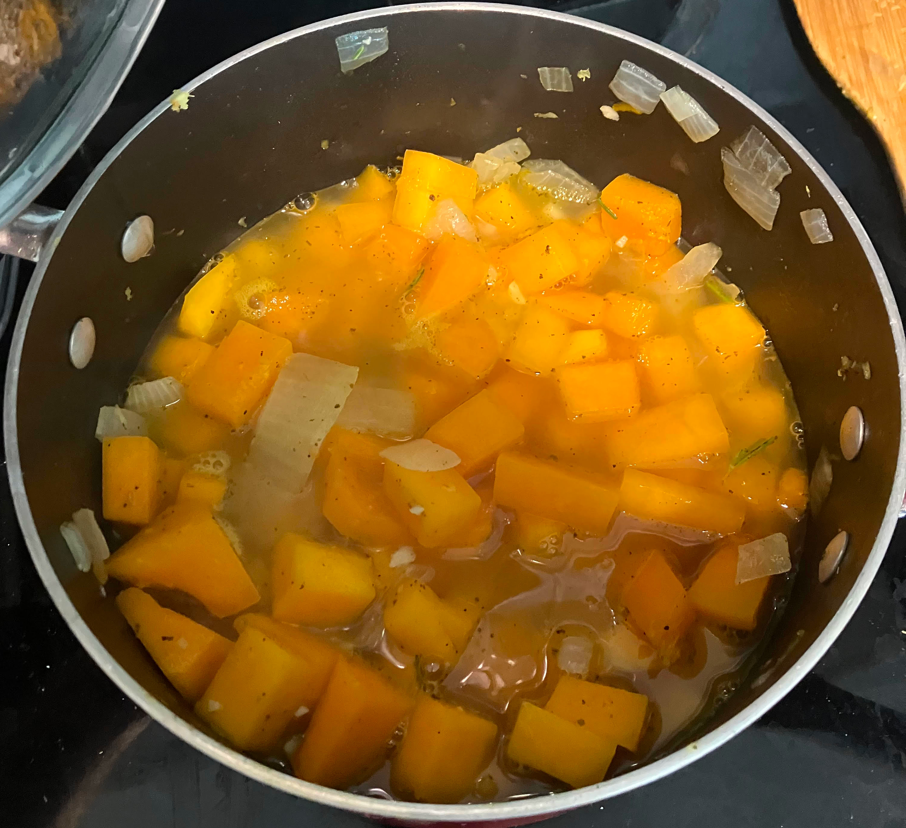

Butternut Squash Soup

Return to Recipes
Description
This creamy soup is perfect for the fall weather.
Ingredients
- 1 butternut Squash
- 1 onion
- 4 cups vegetable stock
- 1 tsp salt
- 1 tbsp thyme
- 1 tbsp sage
- 2 tbsp oil
- Milk or heavy cream
- 1/2 tsp ground pepper
Steps
- Put the oil in a large pot with diced onions. Cook on medium high until onions begin to soften.
- Dice up the butternut squash and place in the pot. Cook until beginning to soften.
- Add sage, thyme, salt and pepper, cook for 2-3 minutes.
- Add vegetable stock. Bring soup to a boil. Cover and shimmer until butternut squash is completely softened.
- Add soup to a blender to create a creamy soup. Add milk or heavy cream, usually 1/4 is all it needs, as desired.
- Add salt as desired and enjoy with corn bread!